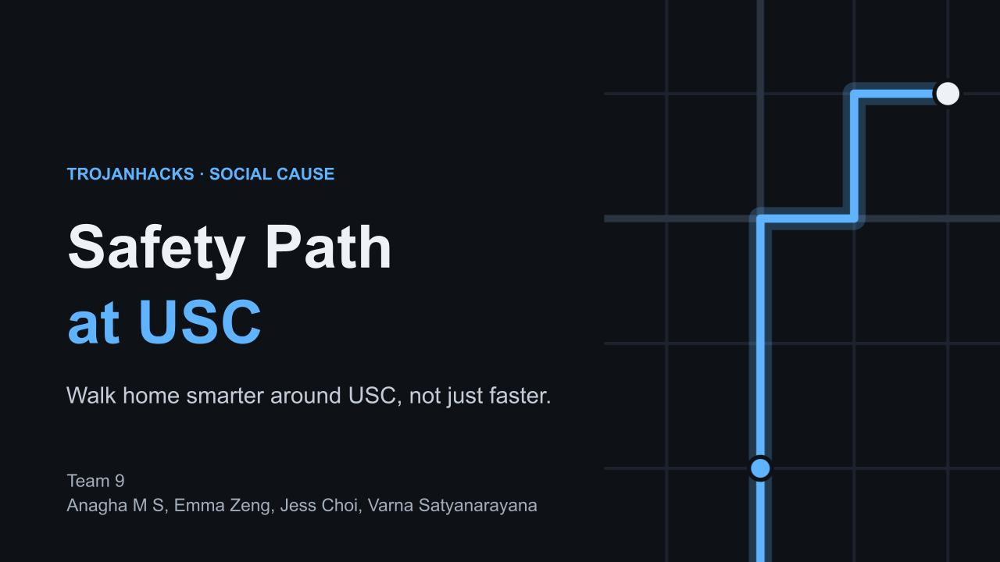

Safety Path
A walking-route web app for the USC area that picks safer paths using street lighting, recent crime, foot traffic and DPS patrol coverage, with live rerouting and an SOS button.
Python · JavaScript · OpenStreetMap
loading emma's little world

A walking-route web app for the USC area that picks safer paths using street lighting, recent crime, foot traffic and DPS patrol coverage, with live rerouting and an SOS button.
Python · JavaScript · OpenStreetMap
Aside from coding, I also enjoy .
I like to take digital photobooth pictures, try my photobooth here.
Fall picks
Focus on what's within your control, and practice a healthy amount of voluntary discomfort.
you've reached the end, thanks for exploring my website